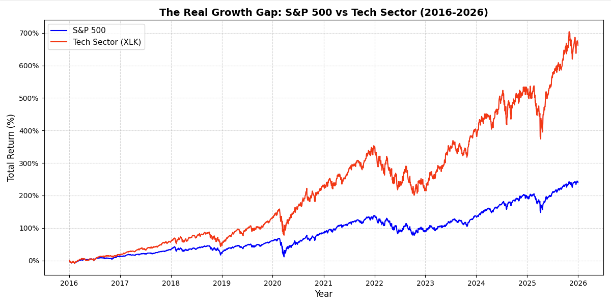

Background
What
Technology is not defined as a electric device or software but refers to innovation and development of new tools, techniques, and systems that bring value to human life. Value is defined by the happiness that is brought upon a person and technology has been the strongest driver of this postive change.
How
A few examples of advancements though not all:
How
To show the impact, it is important to look at the numbers:
This graph shows the growth of the S&P 500 vs the Tech Sector in the last decade

The graph shows how the tech sector has grown 700% compared to the S&P 500 growing 200%, showing how monumental and astonishing the tech sector has been and the unprecented amount of wealth it has generated Some more key facts below: